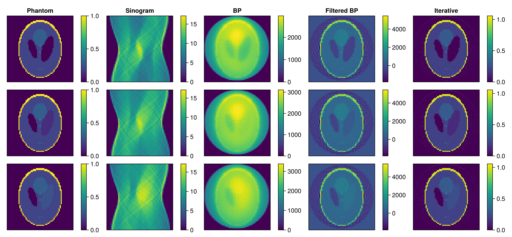

Plan Storage and Usability
When working with serialized RecoPlans, managing modules and plan files becomes important. This guide shows how to set up a plan storage system for automatic RecoPlan and module discovery. Ideally, this is implemented in a reconstruction package and abstracted away from the users.
Basic Storage System
Here's a simple system for managing plan directories and modules. We first track plans and modules for our reconstruction:
const recoPlanPaths = AbstractString[]
const recoPlanModules = Module[@__MODULE__, AbstractImageReconstruction, OurRadonReco, RegularizedLeastSquares]4-element Vector{Module}:
Main
AbstractImageReconstruction
Main.OurRadonReco
RegularizedLeastSquaresThen we define methods to extend our storage:
addRecoPlanPath(path) = !(path in recoPlanPaths) ? pushfirst!(recoPlanPaths, path) : nothing
addRecoPlanModule(mod) = !(mod in recoPlanModules) ? push!(recoPlanModules, mod) : nothing
getRecoPlanModules() = recoPlanModules
function getRadonPlanList(; full = false)
result = String[]
for path in recoPlanPaths
if isdir(path)
plans = filter(a -> contains(a, ".toml"), readdir(path, join = full))
push!(result, plans...)
end
end
return result
endgetRadonPlanList (generic function with 1 method)We then define a helper function that lets us find a plan if a user provides the name:
function planpath(name::AbstractString)
for dir in recoPlanPaths
filename = joinpath(dir, "$(name).toml")
isfile(filename) && return filename
end
isfile(name) && return name
throw(ArgumentError("Could not find plan: $name"))
endplanpath (generic function with 1 method)Radon-Specific Storage System
Once we define this tooling in our Radon package, we can provide default reconstruction algorithms. Let's assume we have a subfolder called config for stored RecoPlans:
const DEFAULT_PLANS_PATH = joinpath(@__DIR__, "config")
if !isdir(DEFAULT_PLANS_PATH)
mkdir(DEFAULT_PLANS_PATH)
end"/home/runner/work/AbstractImageReconstruction.jl/AbstractImageReconstruction.jl/docs/build/generated/howto/config"We can add this path when loading our Radon package:
addRecoPlanPath(DEFAULT_PLANS_PATH)1-element Vector{AbstractString}:
"/home/runner/work/AbstractImage" ⋯ 52 bytes ⋯ "s/build/generated/howto/config"Then we define helper functions that either load a plan directly from a file or search for a stored one:
function loadRadonPlan(planfile::AbstractString, modules; kwargs...)
return open(planfile, "r") do io
return loadRadonPlan(io, modules; kwargs...)
end
end
function loadRadonPlan(io, modules; kwargs...)
plan = loadPlan(io, modules)
setAll!(plan; kwargs...)
return plan
end
function RadonRecoPlan(value::String, modules = getRecoPlanModules(); kwargs...)
if isfile(value) && endswith(value, ".toml")
return loadRadonPlan(value, modules; kwargs...)
else
return loadRadonPlan(planpath(value), modules; kwargs...)
end
endRadonRecoPlan (generic function with 2 methods)We can also provide a helper reconstruction function:
function AbstractImageReconstruction.reconstruct(name::String, sino; modules = getRecoPlanModules(), kwargs...)
plan = RadonRecoPlan(name, modules; kwargs...)
return reconstruct(build(plan), sino)
endLet's now populate our storage with some reconstructions. First, a simple direct reconstruction:
plan = RecoPlan(DirectRadonAlgorithm; parameter =
RecoPlan(DirectRadonParameters;
pre = RecoPlan(RadonPreprocessingParameters),
reco = RecoPlan(RadonBackprojectionParameters)
)
)
savePlan(joinpath(DEFAULT_PLANS_PATH, "direct.toml"), plan)Then, a filtered back projection:
plan = RecoPlan(DirectRadonAlgorithm; parameter =
RecoPlan(DirectRadonParameters;
pre = RecoPlan(RadonPreprocessingParameters),
reco = RecoPlan(RadonFilteredBackprojectionParameters)
)
)
savePlan(joinpath(DEFAULT_PLANS_PATH, "filtered.toml"), plan)Lastly, an iterative reconstruction:
plan = RecoPlan(IterativeRadonAlgorithm; parameter =
RecoPlan(IterativeRadonParameters;
pre = RecoPlan(RadonPreprocessingParameters),
reco = RecoPlan(IterativeRadonReconstructionParameters)
)
)
savePlan(joinpath(DEFAULT_PLANS_PATH, "iterative.toml"), plan)Usage Example
With this system, using our reconstructions becomes much simpler. Users only need to load our reconstruction package OurRadonReco:
using OurRadonRecoThen they can list available plans:
getRadonPlanList()3-element Vector{String}:
"direct.toml"
"filtered.toml"
"iterative.toml"Load a plan by name (modules are automatically used):
plan = RadonRecoPlan("filtered")RecoPlan{Main.OurRadonReco.DirectRadonAlgorithm}
└─ parameter::RecoPlan{Main.OurRadonReco.DirectRadonParameters}
├─ reco::RecoPlan{Main.OurRadonReco.RadonFilteredBackprojectionParameters}
│ ├─ filter
│ └─ angles
└─ pre::RecoPlan{Main.OurRadonReco.RadonPreprocessingParameters}
├─ numAverages
└─ frames
Or set up reconstructions using the plans directly or our helper method:
params = Dict{Symbol, Any}()
params[:frames] = collect(1:3)
params[:eltype] = eltype(sinograms)
params[:shape] = size(images)[1:3]
params[:angles] = angles
params[:iterations] = 20
params[:reg] = [L2Regularization(0.001), PositiveRegularization()]
params[:solver] = CGNR
image_direct = reconstruct("direct", sinograms; params...)
image_filtered = reconstruct("filtered", sinograms; params...)
image_iter = reconstruct("iterative", sinograms; params...)
fig = Figure()
for i = 1:3
plot_image(fig[i,1], reverse(images[:, :, 24, i]), title = i == 1 ? "Phantom" : "")
plot_image(fig[i,2], sinograms[:, :, 24, i], title = i == 1 ? "Sinogram" : "")
plot_image(fig[i,3], reverse(image_direct[:, :, 24, i]), title = i == 1 ? "BP" : "")
plot_image(fig[i,4], reverse(image_filtered[:, :, 24, i]), title = i == 1 ? "Filtered BP" : "")
plot_image(fig[i,5], reverse(image_iter[:, :, 24, i]), title = i == 1 ? "Iterative" : "")
end
resize_to_layout!(fig)
fig
If users want to extend our package with new algorithms, they can write new parameters or algorithms and add them to our tracking setup. Similarly, other packages built on ours can add themselves during loading and make their plans available through our base interface. We could also define package extensions which trigger on GPU packages being loaded and add GPU-specific parameters and/or track the GPU modules.
Some further steps to flesh out such a system:
- Add caching of
RecoPlans to take advantage of cached - Keyword arguments can change plan structures and should be applied in a specific order
- Graphical interface to allow users full control over nested algorithms
- The
reconstructhelper function currently commits type piracy since neitherStrings,Arrays, nor the function itself are defined inOurRadonReco
This page was generated using Literate.jl.